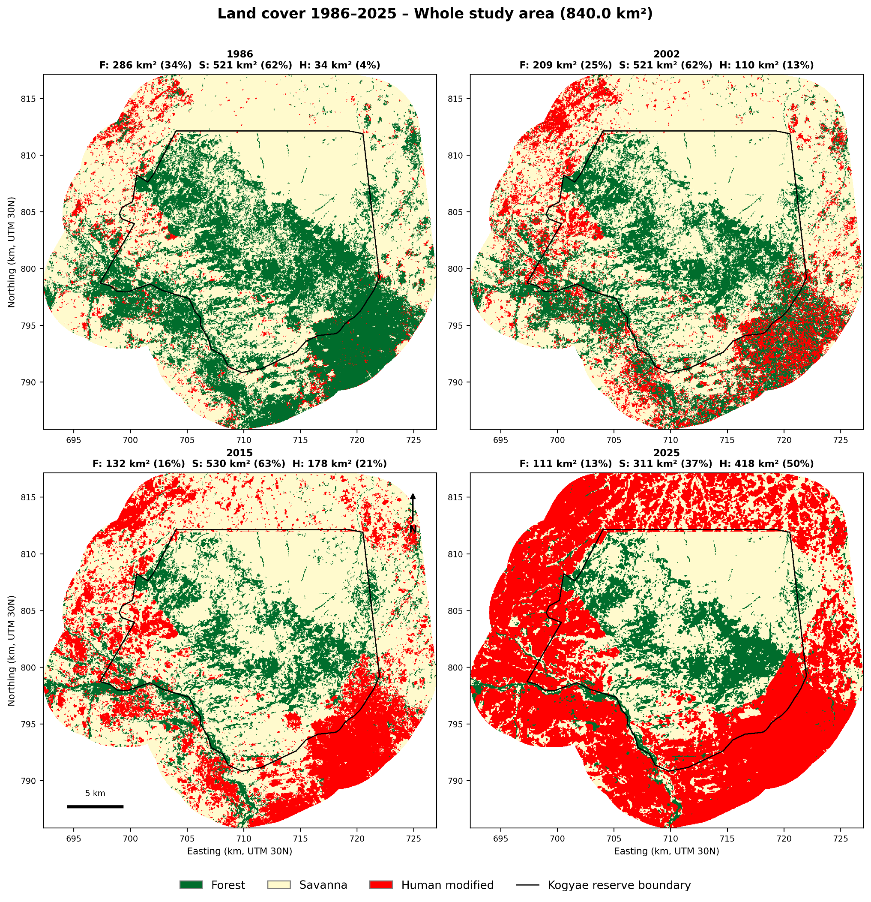

MSc Research
Forest–Savanna Landscape Dynamics
Historical land-cover classification and vegetation change analysis in Ghana's forest–savanna transition zone.
Methods: Landsat time series, Random Forest, LandTrendr, GIS, machine learning.
Tools: Python, Google Earth Engine, R, PyTorch.